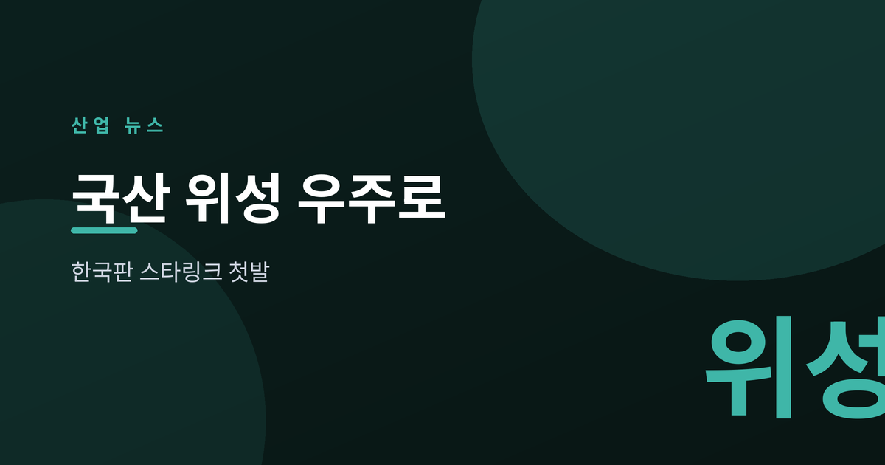
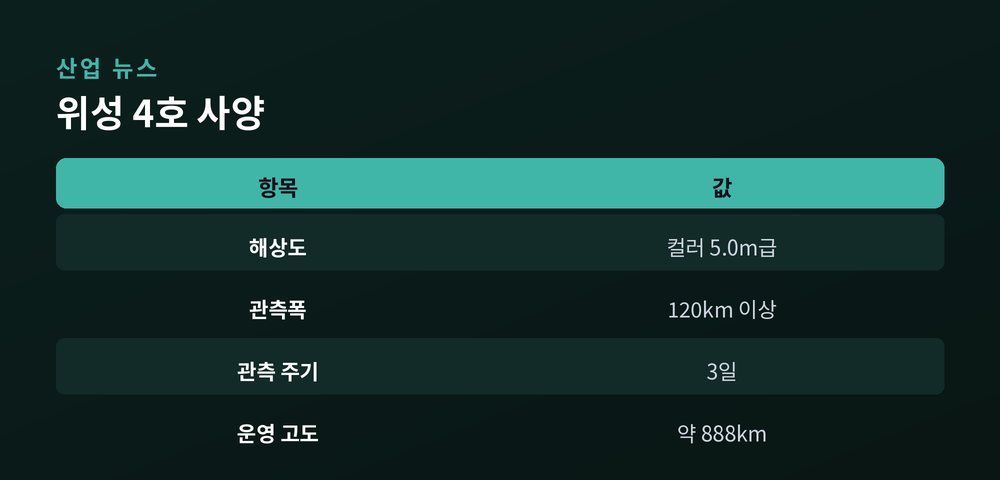
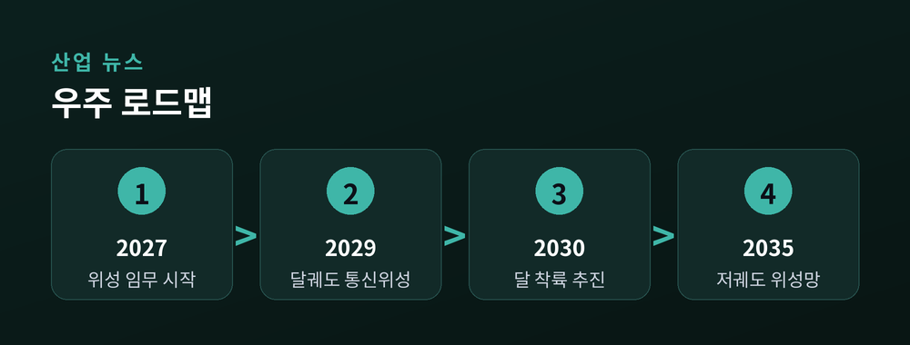
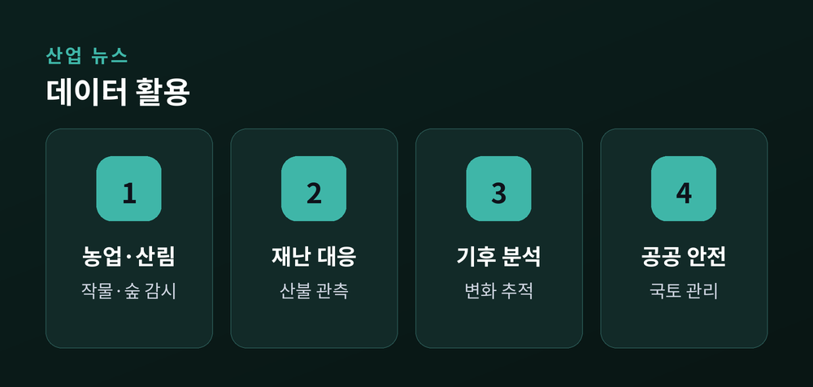

'한국판 스타링크'의 첫발

7월 7일 오후 4시 10분, 국산 핵심 기술로 만든 차세대중형위성 4호(CAS500-4)가 미국 반덴버그 우주군기지에서 스페이스X 팰컨9에 실려 발사됐습니다.
이 위성에는 전국을 3일 주기로 관측하는 광역관측카메라가 실렸습니다. 아주경제 등 보도에 따르면 컬러 5.0m급 해상도에 관측폭은 120km 이상입니다. 발사 약 2시간 22분 뒤 발사체에서 분리돼, 노르웨이 스발바르 지상국과 최초 교신하는 일정으로 진행됐습니다.
"농업·산림 관리부터 재난 대응, 기후변화 분석까지 활용된다" — 머니투데이

단발성 발사에 그치지 않고, 정부가 며칠 앞서 공개한 대형 우주 전략과 맞물려 있다는 점이 핵심입니다.
전자신문과 문화일보 보도를 종합하면, 우주항공청은 7월 3일 2035년까지 수백 기의 저궤도 위성으로 이른바 '한국판 스타링크'인 독자 위성통신망을 구축하겠다는 계획을 내놨습니다. 저궤도 통신망을 국가안보와 통신주권을 지키는 핵심 인프라로 규정한 것입니다.

달 탐사 시점도 앞당겨졌습니다. 당초 2032년 차세대발사체로 달 착륙선을 보내려던 계획에 앞서, 2030년 누리호로 민간 소형 달 착륙선을 먼저 발사하는 방안을 추진합니다. 2029년 달 궤도 통신위성 발사도 함께 검토됩니다.
차세대중형위성 4호는 발사 뒤 고도 약 888km 궤도에서 약 4개월간 초기 운영을 거칩니다.
본격적인 임무 시작은 2027년 상반기로 예정돼 있습니다. 3일마다 한반도를 훑는 데이터는 산불 감시, 농작물·산림 변화 모니터링, 재난·재해 대응, 기후 분석 등 공공 영역에서 폭넓게 활용될 전망입니다.

위성을 '한 번 쏘는 일'에서 '지속적으로 운영하는 인프라'로 넘어가는 전환점이라는 평가가 나옵니다.
다만 아직 갈 길은 남아 있습니다. 머니투데이는 한국형 저궤도 위성망에 14조원대 투자가 거론된다고 전했습니다. 발사체 확보, 지상국 확충, 민간 참여 유도가 뒤따라야 실현 가능한 규모입니다. 이번 발사가 스페이스X 로켓을 이용했다는 점도, 발사 자립이라는 숙제를 함께 보여줍니다.
경남 창원·사천·진주와 전남 순천·고흥을 잇는 우주항공 산업 거점 육성 계획이 얼마나 속도를 낼지가, 향후 몇 년의 관전 포인트가 될 것입니다.